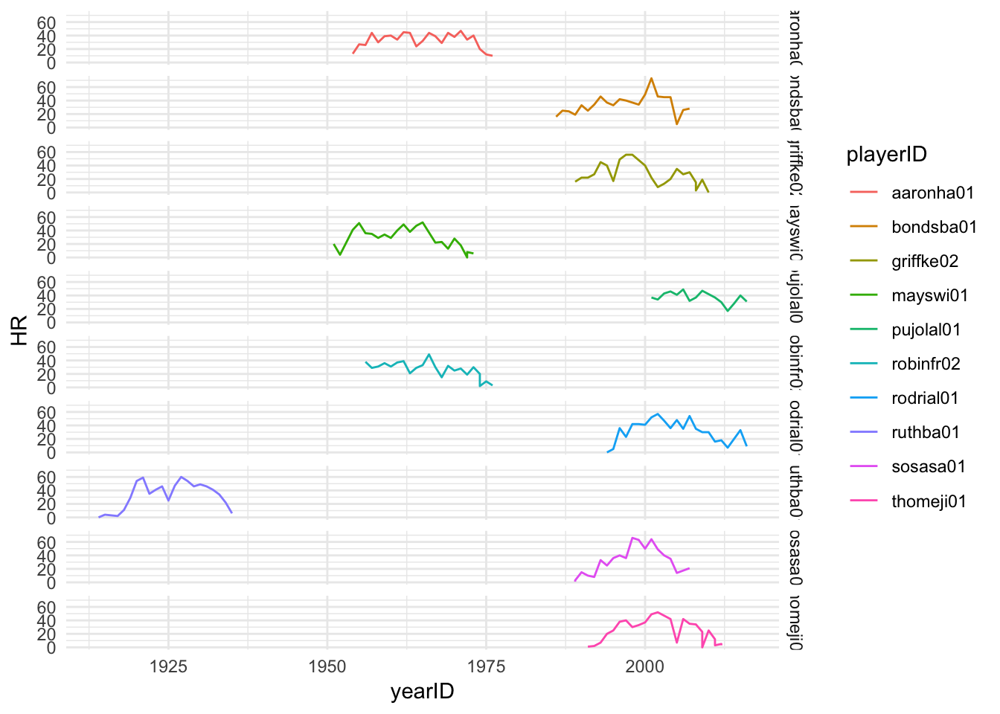

Chapter 11 Facets in ggplot
In this section, we will plot the homerun performances of the 10 greatest homerun hitters in baseball history. First, let’s generate the list of these ten players;
hitters<-Batting %>%
group_by(playerID) %>%
summarize(careerHR = sum(HR)) %>%
top_n(10)## Selecting by careerHRdata.frame(hitters)## playerID careerHR
## 1 aaronha01 755
## 2 bondsba01 762
## 3 griffke02 630
## 4 mayswi01 660
## 5 pujolal01 591
## 6 robinfr02 586
## 7 rodrial01 696
## 8 ruthba01 714
## 9 sosasa01 609
## 10 thomeji01 612Note the use of the new function top_n.
We can now take the Batting data frame and pull out just the playerID, yearID, and HR columns:
HR_df <-Batting %>%
select(playerID,yearID,HR)
head(HR_df)## playerID yearID HR
## 1 abercda01 1871 0
## 2 addybo01 1871 0
## 3 allisar01 1871 0
## 4 allisdo01 1871 2
## 5 ansonca01 1871 0
## 6 armstbo01 1871 0Finally, we can join, and we have our dataset:
topHitters <- inner_join(hitters,HR_df,by=c("playerID")) %>%
select(playerID,yearID,HR)
data.frame(topHitters)## playerID yearID HR
## 1 aaronha01 1954 13
## 2 aaronha01 1955 27
## 3 aaronha01 1956 26
## 4 aaronha01 1957 44
## 5 aaronha01 1958 30
## 6 aaronha01 1959 39
## 7 aaronha01 1960 40
## 8 aaronha01 1961 34
## 9 aaronha01 1962 45
## 10 aaronha01 1963 44
## 11 aaronha01 1964 24
## 12 aaronha01 1965 32
## 13 aaronha01 1966 44
## 14 aaronha01 1967 39
## 15 aaronha01 1968 29
## 16 aaronha01 1969 44
## 17 aaronha01 1970 38
## 18 aaronha01 1971 47
## 19 aaronha01 1972 34
## 20 aaronha01 1973 40
## 21 aaronha01 1974 20
## 22 aaronha01 1975 12
## 23 aaronha01 1976 10
## 24 bondsba01 1986 16
## 25 bondsba01 1987 25
## 26 bondsba01 1988 24
## 27 bondsba01 1989 19
## 28 bondsba01 1990 33
## 29 bondsba01 1991 25
## 30 bondsba01 1992 34
## 31 bondsba01 1993 46
## 32 bondsba01 1994 37
## 33 bondsba01 1995 33
## 34 bondsba01 1996 42
## 35 bondsba01 1997 40
## 36 bondsba01 1998 37
## 37 bondsba01 1999 34
## 38 bondsba01 2000 49
## 39 bondsba01 2001 73
## 40 bondsba01 2002 46
## 41 bondsba01 2003 45
## 42 bondsba01 2004 45
## 43 bondsba01 2005 5
## 44 bondsba01 2006 26
## 45 bondsba01 2007 28
## 46 griffke02 1989 16
## 47 griffke02 1990 22
## 48 griffke02 1991 22
## 49 griffke02 1992 27
## 50 griffke02 1993 45
## 51 griffke02 1994 40
## 52 griffke02 1995 17
## 53 griffke02 1996 49
## 54 griffke02 1997 56
## 55 griffke02 1998 56
## 56 griffke02 1999 48
## 57 griffke02 2000 40
## 58 griffke02 2001 22
## 59 griffke02 2002 8
## 60 griffke02 2003 13
## 61 griffke02 2004 20
## 62 griffke02 2005 35
## 63 griffke02 2006 27
## 64 griffke02 2007 30
## 65 griffke02 2008 15
## 66 griffke02 2008 3
## 67 griffke02 2009 19
## 68 griffke02 2010 0
## 69 mayswi01 1951 20
## 70 mayswi01 1952 4
## 71 mayswi01 1954 41
## 72 mayswi01 1955 51
## 73 mayswi01 1956 36
## 74 mayswi01 1957 35
## 75 mayswi01 1958 29
## 76 mayswi01 1959 34
## 77 mayswi01 1960 29
## 78 mayswi01 1961 40
## 79 mayswi01 1962 49
## 80 mayswi01 1963 38
## 81 mayswi01 1964 47
## 82 mayswi01 1965 52
## 83 mayswi01 1966 37
## 84 mayswi01 1967 22
## 85 mayswi01 1968 23
## 86 mayswi01 1969 13
## 87 mayswi01 1970 28
## 88 mayswi01 1971 18
## 89 mayswi01 1972 0
## 90 mayswi01 1972 8
## 91 mayswi01 1973 6
## 92 pujolal01 2001 37
## 93 pujolal01 2002 34
## 94 pujolal01 2003 43
## 95 pujolal01 2004 46
## 96 pujolal01 2005 41
## 97 pujolal01 2006 49
## 98 pujolal01 2007 32
## 99 pujolal01 2008 37
## 100 pujolal01 2009 47
## 101 pujolal01 2010 42
## 102 pujolal01 2011 37
## 103 pujolal01 2012 30
## 104 pujolal01 2013 17
## 105 pujolal01 2014 28
## 106 pujolal01 2015 40
## 107 pujolal01 2016 31
## 108 robinfr02 1956 38
## 109 robinfr02 1957 29
## 110 robinfr02 1958 31
## 111 robinfr02 1959 36
## 112 robinfr02 1960 31
## 113 robinfr02 1961 37
## 114 robinfr02 1962 39
## 115 robinfr02 1963 21
## 116 robinfr02 1964 29
## 117 robinfr02 1965 33
## 118 robinfr02 1966 49
## 119 robinfr02 1967 30
## 120 robinfr02 1968 15
## 121 robinfr02 1969 32
## 122 robinfr02 1970 25
## 123 robinfr02 1971 28
## 124 robinfr02 1972 19
## 125 robinfr02 1973 30
## 126 robinfr02 1974 20
## 127 robinfr02 1974 2
## 128 robinfr02 1975 9
## 129 robinfr02 1976 3
## 130 rodrial01 1994 0
## 131 rodrial01 1995 5
## 132 rodrial01 1996 36
## 133 rodrial01 1997 23
## 134 rodrial01 1998 42
## 135 rodrial01 1999 42
## 136 rodrial01 2000 41
## 137 rodrial01 2001 52
## 138 rodrial01 2002 57
## 139 rodrial01 2003 47
## 140 rodrial01 2004 36
## 141 rodrial01 2005 48
## 142 rodrial01 2006 35
## 143 rodrial01 2007 54
## 144 rodrial01 2008 35
## 145 rodrial01 2009 30
## 146 rodrial01 2010 30
## 147 rodrial01 2011 16
## 148 rodrial01 2012 18
## 149 rodrial01 2013 7
## 150 rodrial01 2015 33
## 151 rodrial01 2016 9
## 152 ruthba01 1914 0
## 153 ruthba01 1915 4
## 154 ruthba01 1916 3
## 155 ruthba01 1917 2
## 156 ruthba01 1918 11
## 157 ruthba01 1919 29
## 158 ruthba01 1920 54
## 159 ruthba01 1921 59
## 160 ruthba01 1922 35
## 161 ruthba01 1923 41
## 162 ruthba01 1924 46
## 163 ruthba01 1925 25
## 164 ruthba01 1926 47
## 165 ruthba01 1927 60
## 166 ruthba01 1928 54
## 167 ruthba01 1929 46
## 168 ruthba01 1930 49
## 169 ruthba01 1931 46
## 170 ruthba01 1932 41
## 171 ruthba01 1933 34
## 172 ruthba01 1934 22
## 173 ruthba01 1935 6
## 174 sosasa01 1989 1
## 175 sosasa01 1989 3
## 176 sosasa01 1990 15
## 177 sosasa01 1991 10
## 178 sosasa01 1992 8
## 179 sosasa01 1993 33
## 180 sosasa01 1994 25
## 181 sosasa01 1995 36
## 182 sosasa01 1996 40
## 183 sosasa01 1997 36
## 184 sosasa01 1998 66
## 185 sosasa01 1999 63
## 186 sosasa01 2000 50
## 187 sosasa01 2001 64
## 188 sosasa01 2002 49
## 189 sosasa01 2003 40
## 190 sosasa01 2004 35
## 191 sosasa01 2005 14
## 192 sosasa01 2007 21
## 193 thomeji01 1991 1
## 194 thomeji01 1992 2
## 195 thomeji01 1993 7
## 196 thomeji01 1994 20
## 197 thomeji01 1995 25
## 198 thomeji01 1996 38
## 199 thomeji01 1997 40
## 200 thomeji01 1998 30
## 201 thomeji01 1999 33
## 202 thomeji01 2000 37
## 203 thomeji01 2001 49
## 204 thomeji01 2002 52
## 205 thomeji01 2003 47
## 206 thomeji01 2004 42
## 207 thomeji01 2005 7
## 208 thomeji01 2006 42
## 209 thomeji01 2007 35
## 210 thomeji01 2008 34
## 211 thomeji01 2009 23
## 212 thomeji01 2009 0
## 213 thomeji01 2010 25
## 214 thomeji01 2011 12
## 215 thomeji01 2011 3
## 216 thomeji01 2012 5
## 217 thomeji01 2012 3We could now plot the homerun performances;
ggplot() +
geom_line(data=topHitters,aes(x=yearID,y=HR,group=playerID,color=playerID)) +
theme_minimal()The three distinct group is certainly interesting! Otherwise, it is a bit of a mess. But we can use faceting to give a clearer presentation:
ggplot() +
geom_line(data=topHitters,aes(x=yearID,y=HR,group=playerID,color=playerID)) +
facet_grid(playerID~.) +
theme_minimal()
If you wanted to layout the plots horizontally, you can use .~playerID, but in this case it does not look very good.
ggplot() +
geom_line(data=topHitters,aes(x=yearID,y=HR,group=playerID,color=playerID)) +
facet_wrap(~playerID) +
theme_minimal()Here the plots are simply wrapped around, so there is no concept of vertical or horizontal.